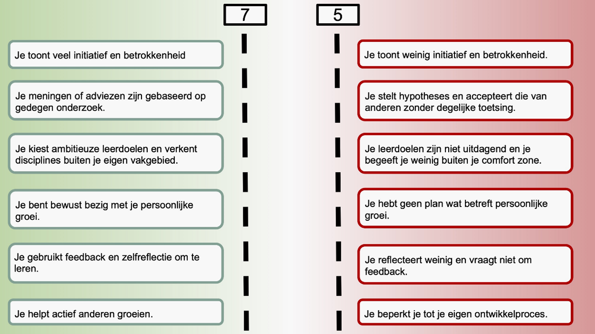

<!DOCTYPE html>
<html>
   <head>
      <title>
         Robert's Hello World
      </title>
      <link rel="stylesheet" type="text/css" href="style.css">
   </head>
   <html>

      <!DOCTYPE html>
      <html>
      <head>
      <style>
      body {
        font-size: 16px;
      }
      
      ul {
        list-style-type: none;
        margin: 0;
        padding: 0;
        overflow: hidden;
        background-color: rgb(0, 0, 0);
        position: -webkit-sticky; /* Safari */
        position: sticky;
        top: 0;
      }
      
      li {
        float: left;
      }
      
      li a {
        display: block;
        color: white;
        text-align: center;
        padding: 14px 16px;
        text-decoration: none;
      }
      
      li a:hover {
        background-color: #ff5e0e;
      }
      
      .active {
        background-color: #ff5e0e;
      }
      </style>
      </head>
      


</body>
</html>
   <body style="background-color:#9f9b9b;">

      
                  <!-- scrolfunctie -->
         
                  <ul>
                    <li><a class="active" href="index.html">Hello World</a></li>
                    <li><a  href="smartme.html">Smart Me</a></li>
                    <li><a  href="smartbussines.html">Smart Bussines</a></li>
                    <li><a  href="smarttechnology.html">Smart Technology</Table></a></li>
                    <li><a  href="smartconnection.html">Smart Connection</a></li>
                    <li><a  href="smartproject.html">Smart Project</a></li>
                    <li><a  href="smartreview.html">Smart Review</a></li>
                    <li style="float:right"><a href="https://bkmoodle.aoohan.nl/my/"></a></li>
                  </ul>
      
         <!-- Headings -->
         <div id="title">
         <H1>Robert's Hello world</H1>
      </div>

         <!-- Paragraaf1 -->
            <div class="container90">
                  <section id="main">
            <p>Dit is het portfolio van Robert van de Waerdt. Ik ben op dit moment 3-jaars bedrijfskundestudent.
            Ik heb voor de Minor Smart Industry gekozen omdat ik graag meer wil kennis wil opdoen op het gebied van technologie.
            Daarnaast vindt de combinatie van mensen en machines/computers/technologie enorm interessant. Ik ben op dit moment
            ook werkzaam bij  
            <a href="https://www.falkbouwsystemen.nl/?gclid=Cj0KCQjw39uYBhCLARIsAD_SzMT4EtLiAJrsvsAilygDEvrtBppIRoZjB-WTYnSBdL_ls5BuNjmRsQQaAsp1EALw_wcB"
            target="_blank">FALK Bouwsystemen</a>. 
            Daar is mijn intresse voor die combinatie ontstaan. <p>
         </section>
         <aside id="sidebar">
            <H3>Persoonlijke informatie</H3>
            <p>
            Naam:             <span class="tab2"></span>G. Van de Waerdt<br />
            Geboortedatum:    <span class="tab3"></span>29-01-2001<br />
            Woonplaats:       <span class="tab4"></span>Scherpenzeel GLD<br />
            Adres:            <span class="tab5"></span>Vlieterweg 66 3925GC<br />
            Telefoon:         <span class="tab6"></span>06-10963073<br />
            E-mail:           <span class="tab1"></span>G.vandewaerdt@student.han.nl<br />
            <p>
            </aside>
  <!-- Paragraaf2 -->
  <div class="container100">
    <section id="main1">
<p>Op deze website vind u mijn ervaringen tijdens de Minor Smart Industry(MSI). Ik zal activiteiten en ervaringen 
  tegen de spiegel houden van de benodigde competenties die behaald horen te worden. Deze competenties zijn hieronder
   te zien.  <p>
</section>

 
      </div>

      <div id="title5">
        <H4>Via de blokken aan de bovenzijde kunt u mijn reis volgen. </H4>
     </div>
    
   </body>

</html>


